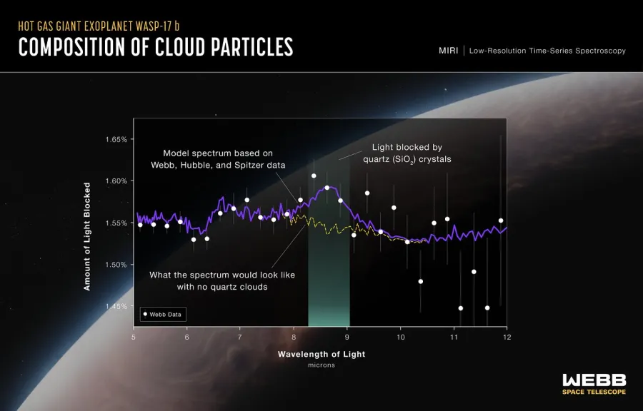

October 16, 2023
WASP-17 b: clouds made of quartz crystals
The James Webb Space Telescope has found evidence of tiny quartz crystals in the high-altitude clouds of the hot Jupiter WASP-17 b. It is the first detection of silicon dioxide (SiO2) in the atmosphere of an exoplanet. The crystals are only about 10 nanometers across.
WASP-17 b is about 1,300 light-years away and about 1,500 degrees Celsius hot. With more than seven times the volume but less than half the mass of Jupiter, it is one of the largest and puffiest planets known. The crystals do not come from a rocky surface; they form in the atmosphere itself.
Sources: NASA: "Webb detects tiny quartz crystals in the clouds of a hot gas giant.", 2023-10-16; ESA/Webb: "Composition of cloud particles - hot gas giant exoplanet WASP-17b.", 2023-10-16